library(tidytuesdayR)
library(tidyverse)
library(ggpubr)
library(lubridate)
library(tidymodels)
library(knitr)
library(gganimate)
theme_set(theme_light())Tidy Tuesday: Alternative Fuel Stations
R
tidy-tuesday
analysis
data-viz
eda
animation
regression
inference
Tidy Tuesday R analysis on alternative fuel station locations with data visualization and linear regression model inference
Introduction
The dataset used for this analysis contains information on alternative fuel stations from the R for Data Science’s Tidy Tuesday Github page. The original source of the data is the US Department of Energy. The goal for this analysis is to better understand which alternative fuel stations are most prominent, how they’re distributed accross the US, and what relationships exist between state populations and the number of stations in each state.
Alternative Fuel Station Data
The main features from the alternative fuel stations data that this analysis will focus on are the following:
| Name | Description | ||||||||||||||||
|---|---|---|---|---|---|---|---|---|---|---|---|---|---|---|---|---|---|
| State | The two character code for the U.S. state or Canadian province/territory of the station’s location | ||||||||||||||||
| City | The city of the station’s location | ||||||||||||||||
| Latitude | The latitude of the station’s address | ||||||||||||||||
| Longitude | The longitude of the station’s address | ||||||||||||||||
| Fuel Type | The type of alternative fuel the station provides. Fuel types are given as code values as described below:
|
Population Data
There are two sets of population data we’ll use in order to construct a full 2010 - 2020 dataset. The first population dataset contains the years 2010 - 2019 and the second contains 1910 - 2020, but only for every 10 years. We will combine the two datasets to get yearly state populations for all years between 2010 to 2020.
The main features from the 2010 to 2019 Census data that this analysis will focus on are th following:
| Name | Description |
|---|---|
| Name | Name of the area containing the population (Nation, State, Region) |
| Population | Resident population estimates |
| POPESTIMATE[2010-2019] | Multiple columns containing the population for the year specified in the column name |
The main features from the 1910 - 2020 Census data that this analysis will focus on are the following:
| Name | Description |
|---|---|
| Name | Name of the area containing the population (Nation, State, Region) |
| Population | Resident population estimates |
Data Wrangling
Load Libraries
For this analysis we’ll make use of the tidytuesdayR package to load the Tidy Tuesday dataset; the tidyverse ecosystem for data tidying, manipulation, exploration, and visualization; ggpubr for displaying correlations on plots; lubridate for handling datetimes; tidymodels for building a regression model; kntr for creating tables; and gganimate for animating visualizations.
Import Data
The 03/01/2022 Tidy Tuesday data is loaded in using the tidytuesdayR package, along with the Census data. We can also create a state reference dataframe to help with merging tables where one has the state abbreviation and the other has the state’s full name. The state area can also be added to later calculate station densities.
tuesdata <- tidytuesdayR::tt_load('2022-03-01')
Downloading file 1 of 1: `stations.csv`stations_raw <- tuesdata$stations
# https://www.census.gov/data/datasets/time-series/demo/popest/2010s-state-total.html
# Census data 2010 - 2019
pop_raw <- read_csv("https://www2.census.gov/programs-surveys/popest/datasets/2010-2019/national/totals/nst-est2019-alldata.csv")
#https://www.census.gov/data/tables/time-series/dec/density-data-text.html
# census data 1910 - 2020 (every 10 years)
pop_raw_2020 <- read_csv("https://www2.census.gov/programs-surveys/decennial/2020/data/apportionment/apportionment.csv")
# create state abbrevation/name ref table
states_ref <- tibble(
name = state.name,
abbr = state.abb,
area = state.area
)Clean Data
Our main set of Census data is cleaned by removing any observations that aren’t states, reshaping the dataframe so each year is in a single column, joining with the state_ref dataframe to get the state land area and finally calculating the population densities. The other set of Census data we’ll use to get values for 2020 is filtered and joined to our main Census data.
pop_density_2020 <- pop_raw_2020 |>
# only look at the year 2020 and state data
filter(Year == 2020, `Geography Type` == "State") |>
# rename and select relevant columns
transmute(
state = Name,
year = as.character(Year),
pop_den = `Resident Population Density`,
pop=`Resident Population`) |>
# join with the states_ref data to get the state abbreviations
inner_join(states_ref, by=c("state" = "name")) |>
select(state, year, pop)
pop_density <- pop_raw |>
# remove non state observation
filter(STATE != "00") |>
# gather the pop estimate column headers into a single column for
# year and the values into a new pop column
pivot_longer(
cols = starts_with("POPESTIMATE"),
names_to = "year",
values_to = "pop") |>
# downselect the columns
transmute(state = NAME, year, pop) |>
# separate the year from the POPESTIMATE text
separate(col=year, sep = "POPESTIMATE", into=c(NA, "year")) |>
# add 2020 data
bind_rows(pop_density_2020) |>
# join with the state area data
inner_join(states_ref, by=c("state" = "name")) |>
# calcualte the population density
mutate(pop_den = pop / area, year = as.numeric(year)) |>
# select the columns of interest
select(state, abbr, year, pop_den, area)The stations_raw data is cleaned by changing the categorical data to factors, changing the OPEN_DATE variable from a string to a date, and creating a new open_year variable that contains only the year that the station was opened. The latitude/longitudes are also filtered to restrict the data to only that found in the US. The data is then joined with the census data.
Since much of this analysis refers to population data and we do not have population densities after the year 2020 available, we will drop any station data with the inner join for years where we do not have population density data (before 2010, after 2020).
stations <- stations_raw |>
# rename columns, convert to factors and dates
transmute(
state = factor(STATE),
city = factor(CITY),
lat = LATITUDE,
lon = LONGITUDE,
fuel_type = factor(FUEL_TYPE_CODE),
open_date = ymd_hms(OPEN_DATE),
open_year = as.numeric(year(OPEN_DATE))
) |>
# filter by lat/lon for continental US
filter(lat > 24 & lat < 52, lon < -64 & lon > -126) |>
# join with the population data
inner_join(pop_density, by=c("state" = "abbr", "open_year" = "year")) |>
# rename the state columns
rename(abbr = state, state = state.y) |>
# move the state column to the front
relocate(state, .before = everything())Exploratory Data Analysis
How are Fuel Stations Distributed Across the US
We can create a histogram of stations by their latitude to get a one dimensional view of how they are distributed from south to north. The histograms can be separated based on fuel type to see how the distributions for each vary. Note that the y-axis varies by histogram, so the bar heights themselves are not comparable between plots.
stations |>
ggplot(aes(lat)) +
geom_histogram(bins=15) +
facet_wrap(vars(fuel_type), scales="free_y") +
labs(
x="Latitude",
y="Electric Stations",
title="Distribution of Electric Stations by Latitude"
)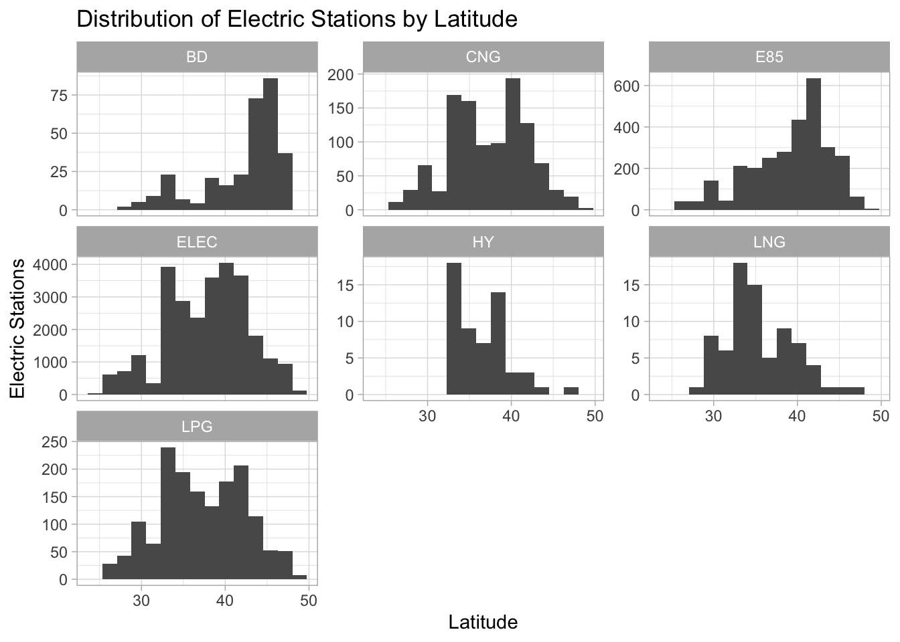
We can see from the histograms that Electric, Hydrogen, Liquified Natural Gas, and Propane are mostly used in the middle latitudes. This may be a result of a large number of cities such as Baltimore, Washington D.C. Philadelphia, Denver, and San Franscio being located in the central latitudes.
Ethanol’s distribution is left skewed, showing that more stations are used in the northern latitudes than the southern latitudes.
We can do the same for longitudes to better understand the distribution of fuel stations from west to east.
stations |>
ggplot(aes(lon)) +
geom_histogram(bins=15) +
facet_wrap(vars(fuel_type), scales="free_y") +
labs(
x="Longitude",
y="Stations",
title="Distribution of Stations by Longitude"
)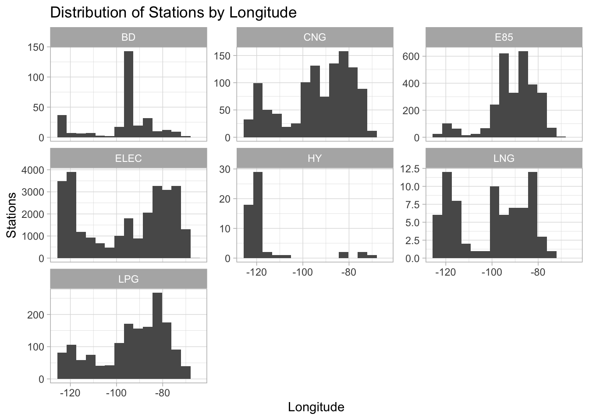
Looking at the longitude distributions, we can see that more electric fuel stations are located in the west and east coasts than in the middle of the country. Ethanol and Propane however are more prominent in the middle of the country than closer to the coasts.
To better visualize the overall distribution, we can create a new map showing the locations of each fuel station. To reduce clutter, we can plot each fuel type separately and color by state.
stations |>
ggplot(aes(lon, lat, color=state)) +
borders("state") +
geom_point(size=0.1, alpha=.4, show.legend = FALSE) +
coord_map() +
theme_void() +
facet_wrap(vars(fuel_type)) +
labs(title="Locations of Each Station Fuel Type")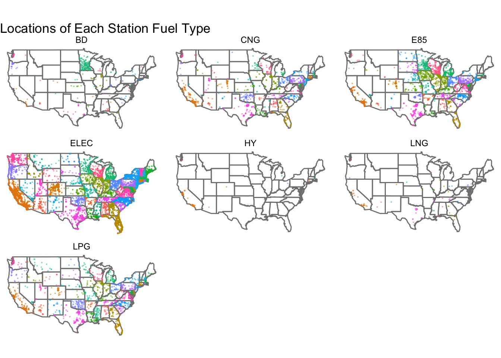
From looking at the maps, electric fuel stations seem to vastly outnumber all other fuel stations, with Hydrogen looking to be the least utilized. Biodiesel looks to be very prominent in North Carolina and South Carolina, filling most of the states, as well as the southern part of Minnesota. Ethanol looks to be most prominently used in the Great Lakes and part of the Mid-West.
Because electric fuel stations are the most prominent type, we can take a more detailed look at that map.
stations |>
filter(fuel_type == "ELEC") |>
ggplot(aes(lon, lat, color=state)) +
borders("state") +
geom_point(size=.1, alpha=.2, show.legend = FALSE) +
coord_map() +
theme_void() +
labs(title="Locations for all Electric Stations")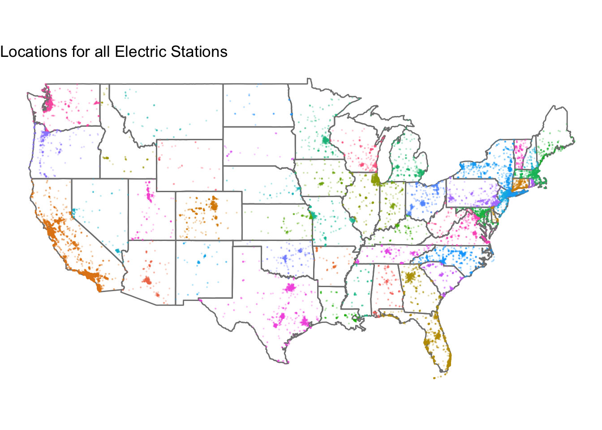
Adding animation to the map allows us to view how the distributions of electric fueling stations changed as more were added over time. It appears from the animation that there was a steady rise in electric stations starting in the years 2011-2012 which is likely due to the fact that the first mass produced electric vehicles, the Nissan Leaf and Chevy Volt, were released in December 2010.
stations |>
filter(fuel_type == "ELEC", !is.na(open_year)) |>
ggplot(aes(lon, lat, color=state)) +
borders("state") +
geom_point(aes(group = seq_along(open_year)), size=.1, show.legend = FALSE) +
coord_map() +
theme_void() +
labs(title="Electric Fueling Stations",
subtitle="Year: {round(frame_along)}") +
transition_reveal(open_year)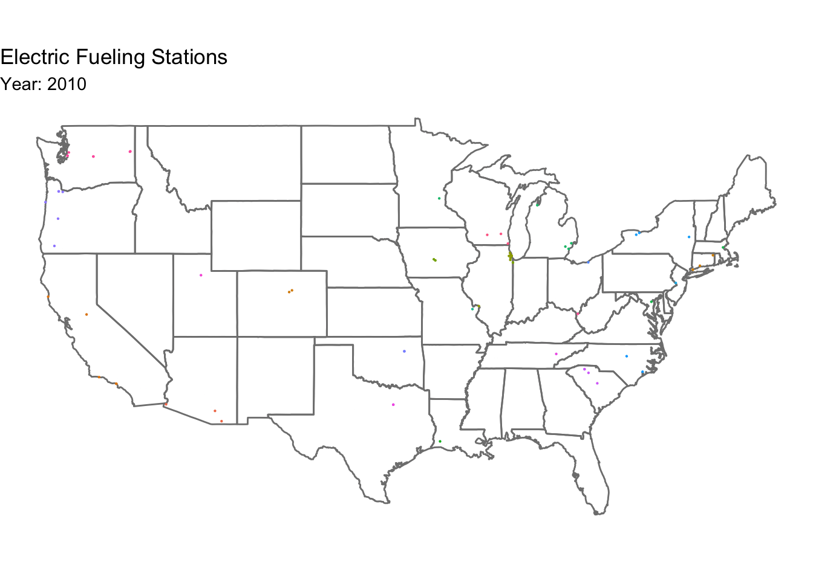
Plotting the cumulative sum of station openings over time, we can see the steady increase in stations over the years.
# Popular electric vehicle release dates
leaf_volt <- as.POSIXct("2010-12-15")
model_s <- as.POSIXct("2012-06-22")
model_3 <- as.POSIXct("2017-07-07")
# calculate electric station cumulation over time
cuml_stations <- stations %>%
# only look at electric
filter(fuel_type == "ELEC") |>
# count the openings for each date
count(open_date, name="total") |>
# arrange by open date to prepare for a cumulative sum
arrange(open_date) |>
# get the cumulative sum of the openings across each date
mutate(sum = cumsum(total))
# plot the cumulative openings
cuml_stations |>
ggplot(aes(open_date, sum)) +
geom_line(show.legend = FALSE) +
scale_x_datetime(date_break = "year", date_labels = "%Y") +
geom_vline(
xintercept = leaf_volt,
linetype="longdash",
color="darkred"
) +
annotate(
"text",
x=as.POSIXct("2010-06-01"),
y=25000,
label=str_wrap("Nissan Leaf and Chevy Volt released", width=10),
size=2,
color="darkred"
) +
geom_vline(
xintercept = model_s,
linetype="longdash",
color="darkred"
) +
annotate(
"text",
x=as.POSIXct("2012-01-01"),
y=25000,
label=str_wrap("Telsa Model S released", width=10),
size=2,
color="darkred"
) +
geom_vline(
xintercept = model_3,
linetype="longdash",
color="darkred"
) +
geom_vline(
xintercept = model_3,
linetype="longdash",
color="darkred"
) +
annotate(
"text",
x=as.POSIXct("2017-01-01"),
y=25000,
label=str_wrap("Telsa Model 3 released", width=10),
size=2,
color="darkred"
) +
labs(
x = "",
y = "Total Electric Stations",
title="Total Electric Stations over Time"
) +
annotate(
"segment",
x= as.POSIXct("2011-02-01"),
xend=as.POSIXct("2012-02-01"),
y=3000,
yend=3000,
arrow = arrow(ends = "both", angle = 90, length = unit(.2,"cm")),
color="darkblue"
) +
annotate(
"text",
x=as.POSIXct("2011-09-01"),
y=5500,
label=str_wrap("openings begin steadily rising", width=15),
color = "darkblue",
size = 2
) +
annotate(
"segment",
x= as.POSIXct("2018-08-01"),
xend=as.POSIXct("2018-11-01"),
y=20000,
yend=14000,
arrow = arrow(),
color="darkblue") +
annotate(
"text",
x=as.POSIXct("2018-08-01"),
y=21000,
label=str_wrap("rate of openings increase", width=30),
color = "darkblue",
size = 2
)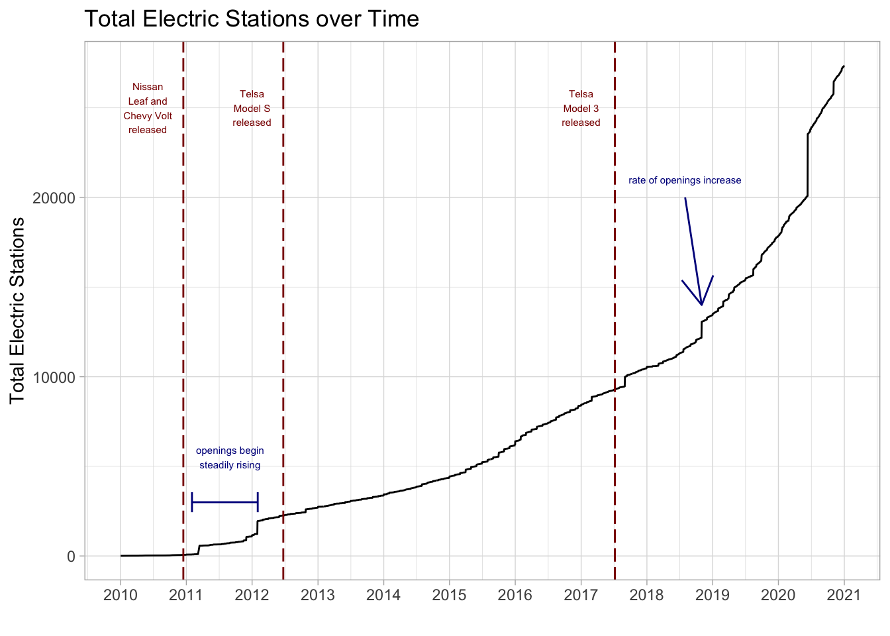
From the plot above we can see that electric charging stations began steadily increasing around 2011, a bit after the release of the Nissan Leaf and Chevy Volt—the first mass produced electric vehicles. Then around 2018, growth of electric charging stations increased, possibly due to Tesla’s slow start to shipping orders for the Model 3, leading to a slower adoption by new electric vehicle owners.
Fuel Types
We can get a clearer picture of how many more electric fuel stations there are than any other kind with a direct comparison.
stations |>
group_by(fuel_type) |>
summarize(n = n()) |>
mutate(fuel_type = fct_reorder(fuel_type, n)) |>
ggplot(aes(fuel_type, n)) +
geom_col(show.legend = FALSE, fill="darkblue") +
coord_flip() +
labs(
x="",
y="Total Stations",
title="Total Number of Stations for Each Fuel Type"
)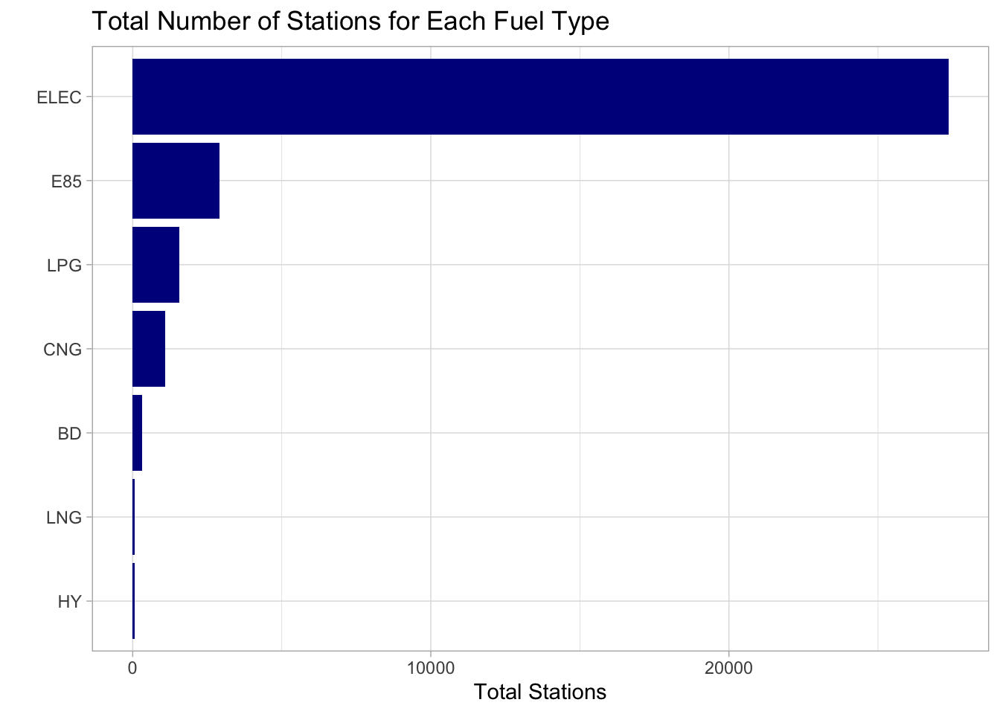
It’s clear from the plot above that electric fuel stations vastly outnumber every other fuel station combined. Because electric stations make up the vast majority of stations, we will reduce our scope by filtering our data to only contain electric fueling stations.
station_elec <- stations |>
filter(fuel_type == "ELEC")Focusing on electric fuel stations, we can look at which cities have the most stations.
station_elec |>
# count the stations in each city, state
count(state, city) |>
# order from most to least
arrange(desc(n)) |>
# get the top 20 cities with the most stations
head(20) |>
# reorder the factors based on the most stations
mutate(city = fct_reorder(city, n)) |>
ggplot(aes(city, n, fill=state)) +
geom_col() +
coord_flip() +
labs(
x="",
y="Total Electric Stations",
title="Total Electric Stations by City",
fill="State"
)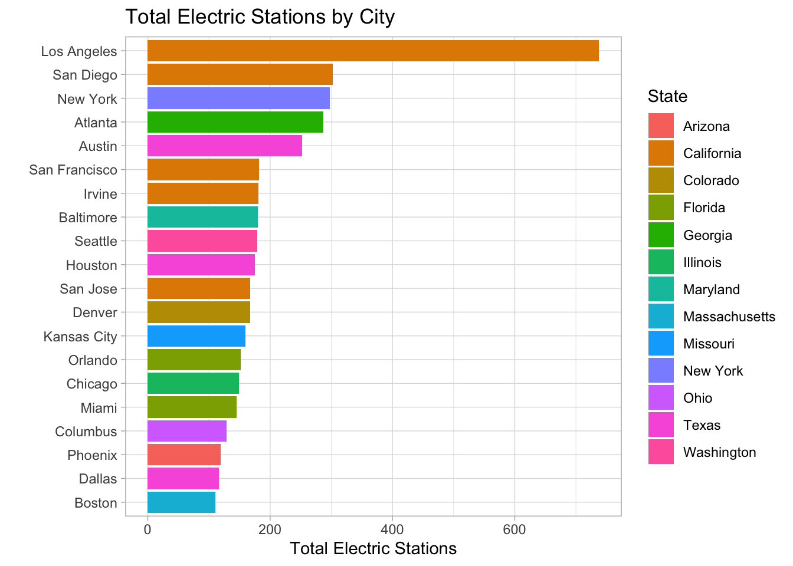
The city of Los Angeles has the most electric fuel stations and about twice as much as the San Diego which has the second highest number of stations. 9 out of the 20 cities with the highest number of electric fuel stations are in California, indicating that California may contain more stations than any other state.
We can confirm this by now plotting the states with the highest number of stations.
station_elec |>
# count the number of stations in each state
count(state) |>
# reorder the factors based on number of stations
mutate(state = fct_reorder(state, n)) |>
ggplot(aes(state, n)) +
geom_col(show.legend = FALSE, fill="darkblue") +
coord_flip() +
labs(
x="",
y="Total Number of Stations",
title="Total Number of Electric Stations by State"
)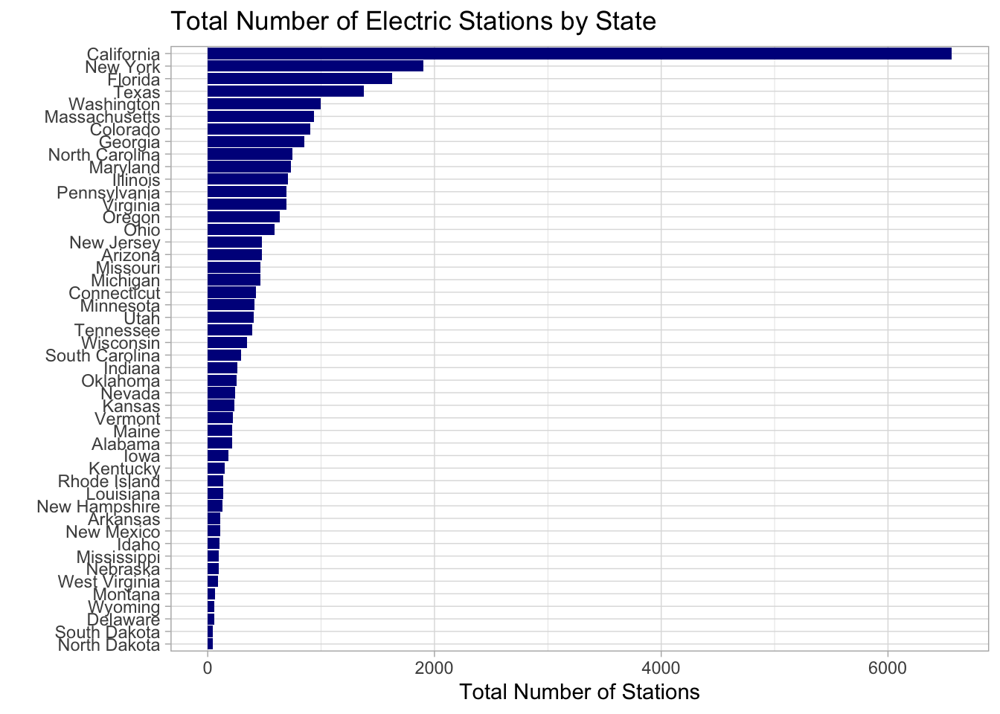
Based on the plot above, California clearly leads the country in number of electric fueling stations. How do they compare when taking into account the size of the state?
By dividing the total number of stations each state has by the area of the state we can get a “station density” for each state to better compare stations across each state. For example, if a very large state such as Texas has as many fueling stations as a smaller state like Massachusetts, then Massachusetts likely has better electric station coverage than Texas as the stations per area is important for fueling during travel.
# calculate station densities
pop_station_den <- station_elec |>
# count the station stations for each state and year
count(state, open_year, pop_den, area, name="num_stations") |>
# group by the state to prepare for a cumulative sum
group_by(state) |>
# arrange by state and year later sum in the correct order
arrange(state, open_year) |>
# calculate the cumulative sum of stations for eachs state
# and calcualte station densities over time
mutate(
tot_stations = cumsum(num_stations),
station_density = tot_stations / area
) |>
# keep the following features
select(state, open_year, pop_den, station_density) |>
ungroup() |>
# make sure every state / year combination exists
complete(state, open_year) |>
# group by the state
group_by(state) |>
# fill in any missing state / year combinations with the
# densities from the previous year
fill(pop_den, station_density, .direction="down") |>
ungroup() |>
# any NAs will be because there was no previous data, so
# these can be set to zero
mutate(pop_den = replace_na(pop_den, 0), station_density = replace_na(station_density, 0))We can plot the newly calculated station densities:
pop_station_den |>
filter(open_year == 2020) |>
mutate(state = fct_reorder(state, station_density)) |>
ggplot(aes(state, station_density)) +
geom_col(show.legend = FALSE, fill="darkblue") +
coord_flip() +
labs(
x="",
y="Electric Station Density (station / sq. mi.)",
title="Electric Station Density by State"
)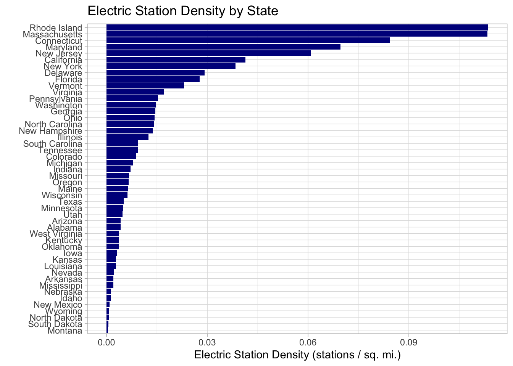
Model Building
Regressing Station Density on Population Density
A sufficient number of fuel stations must be created to cover the area of land and the population of people that they are meant to serve. Given that fuel stations are being produced to meet the needs of their land area and population, we can expect to see a positive correlation between the population density of a given state and the station density in that state.
pop_station_den_2020 <- filter(pop_station_den, open_year==2020)
pop_station_den_2020 |>
ggplot(aes(pop_den, station_density)) +
geom_point() +
# put both axes on log scale to transform exponential data to linear
scale_x_log10() +
scale_y_log10() +
geom_smooth(method = "lm", se=FALSE) +
stat_cor() +
geom_text(aes(label=state), check_overlap = TRUE, vjust = 1, hjust = 1) +
labs(
y="Electric Station Density (station / sq. mi.)",
x = "Population Density (population / sq. mi.)" ,
title="Do States with Higher Population Densities Have Higher Station Densities?"
)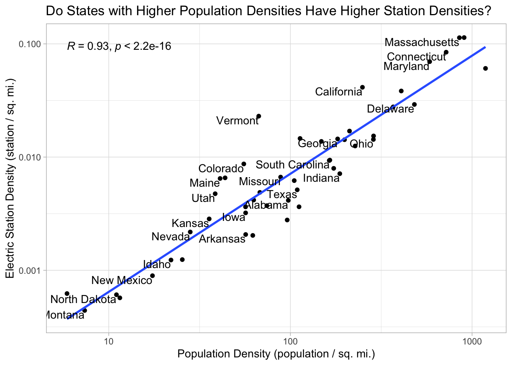
We can build a linear model to make inferences about the relationship. We’ll use a log transform for both the predictor and response variables as we did above in the plot.
# build a linear regression model regressing station density onto population density
lm_mod <- linear_reg() |>
fit(log10(station_density) ~ log10(pop_den), data=pop_station_den_2020)
# get the 95% confidence intervals
coef <- tidy(lm_mod, conf.int = TRUE, conf.level=0.95) |>
filter(term != "(Intercept)")
# print a table of the model summary
coef |>
select(estimate, conf.low, conf.high) |>
cbind(glance(lm_mod)) |>
select(estimate, r.squared, statistic, conf.low, conf.high) |>
kable()| estimate | r.squared | statistic | conf.low | conf.high |
|---|---|---|---|---|
| 1.043191 | 0.8716973 | 312.5271 | 0.9244118 | 1.161971 |
The linear regression model shows a strong correlation of 0.93 between the population density of a state and the station density of that state. With this correlation, we have an \(R^2\) showing that our model explains about 87% of the variability in the data. We also obtained a p-value of 3.855847^{-22}. This implies that under a null hypothesis that the linear model has a slope of 0, there is a near zero probability that we would find the calculated slope above from random samples of the data. This indicates that the relationship found between population density and station density is statistically significant.
Because we used a logarithmic transform for both the predictor and response variables, we cannot simply infer that for each 1 unit increase in the population density, we expect to see, on average, a 1.04 \(\pm\) 0.12 increase in station density. Instead, taking the logarithmic transforms into account, we can infer from this model that for every 1% increase in the population density of a state, we can expect, on average, a 1.04% \(\pm\) 0.12% increase in the station density for that state (UVA Library StatLab).
We can create an animated version of the plot above to see how the regression line has changed over time:
pop_station_den |>
#filter(state == "Wyoming") |>
ggplot(aes(pop_den, station_density)) +
geom_point(show.legend = FALSE) +
scale_x_log10() +
scale_y_log10() +
geom_smooth(method = "lm", se=FALSE) +
geom_text(aes(label=state), check_overlap = TRUE) +
transition_time(open_year) +
labs(
title="Population and Station Density Changes over Time",
subtitle="Year: {round(frame_time)}",
y="Electric Station Density (station / sq. mi.)",
x = "Population Density (population / sq. mi.)" ,
)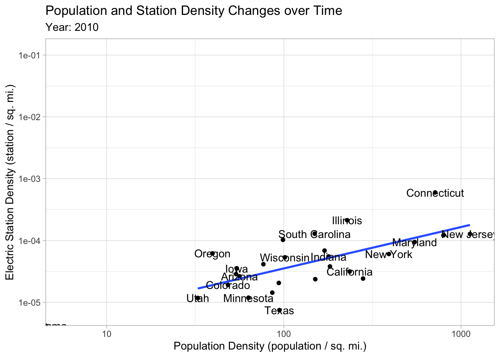
The slope of the regression line is fairly stable between 2010 and 2020 and seems to have remained about the same between 2013 and 2020. In addition to the consistency in slope, the correlation appears to be consistent during that time as well. As expected, population densities had negligible change, but there has been a steady rise in electric charging stations as we have seen in previous visualizations. Based on the steady correlations we’re seeing in this animation, it appears that each state is increasing their electric station density at around the same exponential rate (data has been log transformed).
It could be interesting to see how this trend evolves over time as more data becomes available. We may see the intercept coefficient continue to increase with the electric station density, but the slope relationship between population density and station density remain the same, indicating that there is a stable (and possibly planned) relationship between population density and station density to meet the needs electric vehicle owners across all states.
Conclusion
This analysis focused on understanding the distribution electric fueling stations across the US between the years 2010-2020 and attempted to better understand the relationship between a state’s population and the number of stations in the state. Electric vehicle charging station growth rate seems to coincide with the release of popular electric cars which drive larger adoption of electric vehicles and increase the demand for electric charging stations. We also showed a strong correlation between the population density of a state and the number of electric charging stations per square mile in that state. From this, we were able to infer that for every 1% increase in the population density of a state, we can expect, on average, a 1.04% \(\pm\) 0.12% increase in the station density for that state. Looking at an animation of this trend through time, the slope and strength of correlation appear to be consistent through much of 2010 - 2020.